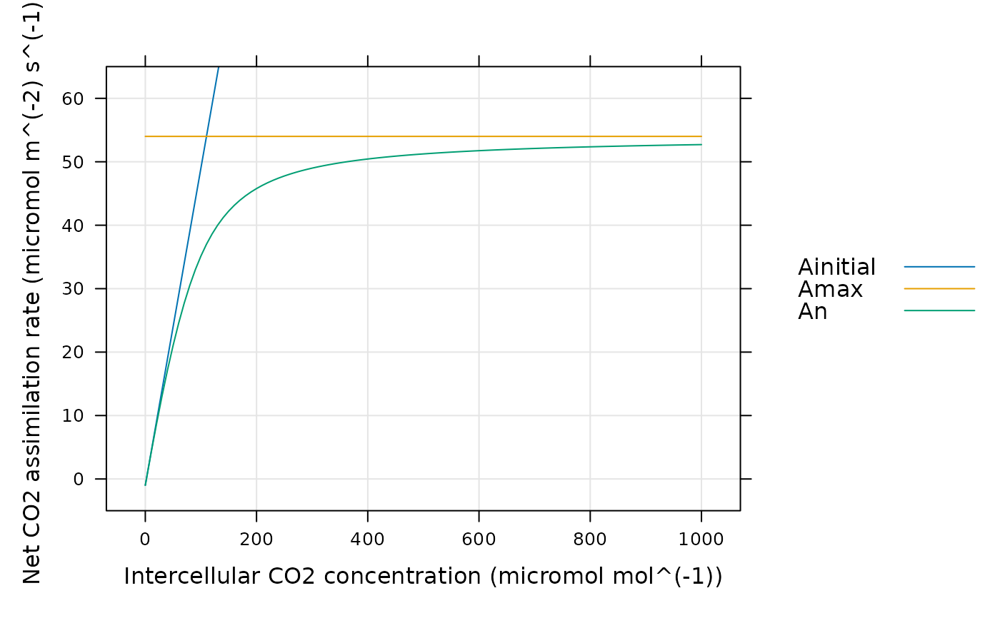

Calculate C4 assimilation rates using a hyperbola
calculate_c4_assimilation_hyperbola.RdCalculates C4 assimilation rates based on an empirical hyperbolic model. This function can accomodate alternative colum names for the variables taken from Licor files in case they change at some point in the future. This function also checks the units of each required column and will produce an error if any units are incorrect.
Usage
calculate_c4_assimilation_hyperbola(
exdf_obj,
c4_curvature,
c4_slope,
rL,
Vmax,
ci_column_name = 'Ci',
hard_constraints = 0,
perform_checks = TRUE,
return_exdf = TRUE
)Arguments
- exdf_obj
An
exdfobject.- c4_curvature
The empirical curvature parameter of the hyperbola (
dimensionless). Ifc4_curvatureis not a number, then there must be a column inexdf_objcalledc4_curvaturewith appropriate units. A numeric value supplied here will overwrite the values in thec4_curvaturecolumn ofexdf_objif it exists.- c4_slope
The empirical slope parameter of the hyperbola (
mol m^(-2) s^(-1)). Ifc4_slopeis not a number, then there must be a column inexdf_objcalledc4_slopewith appropriate units. A numeric value supplied here will overwrite the values in thec4_slopecolumn ofexdf_objif it exists.- rL
The respiration rate, expressed in
micromol m^(-2) s^(-1). IfrLis not a number, then there must be a column inexdf_objcalledrLwith appropriate units. A numeric value supplied here will overwrite the values in therLcolumn ofexdf_objif it exists.- Vmax
The maximum gross assimilation rate, expressed in
micromol m^(-2) s^(-1). IfVmaxis not a number, then there must be a column inexdf_objcalledVmaxwith appropriate units. A numeric value supplied here will overwrite the values in theVmaxcolumn ofexdf_objif it exists.- ci_column_name
The name of the column in
exdf_objthat contains the intercellular CO2 concentration, expressed inmicromol mol^(-1).- hard_constraints
An integer numerical value indicating which types of hard constraints to place on the values of input parameters; see below for more details.
- perform_checks
A logical value indicating whether to check units for the required columns. This should almost always be
TRUE. The option to disable these checks is only intended to be used whenfit_c4_aci_hyperbolacalls this function, since performing these checks many times repeatedly slows down the fitting procedure.- return_exdf
A logical value indicating whether to return an
exdfobject. This should almost always beTRUE. The option to return a vector is mainly intended to be used whenfit_c4_aci_hyperbolacalls this function, since creating anexdfobject to return will slow down the fitting procedure.
Details
General Description of the Model
In contrast to the mechanistic model implemented in
calculate_c4_assimilation, this is a simple empirical model for
C4 assimilation based on a four-parameter hyperbola. In this model, the net
CO2 assimilation rate (An) is given by
An = Ag - rL,
where Ag is the gross assimilation rate and rL is the
respiration rate. In turn, Ag is given by the smaller root of the
following quadratic equation:
curvature * Ag^2 - (Vinitial + Vmax) * Ag + Vinitial * Vmax = 0,
where 0 <= curvature <= 1 is an empirical curvature factor, Vmax
is the maximum gross assimilation rate, and Vinitial represents the
initial response of Ag to increases in the intercellular CO2
concentration (Ci):
Vinitial = slope * Ci.
Here the slope is another empirical factor.
By including the respiration offset, it is also possible to define two other
quantities: the maximum net CO2 assimilation rate (Amax) and the
initial net CO2 assimilation rate (Ainitial). These are given by
Amax = Vmax - rL
and
Ainitial = Vinitial - rL.
Overall, this model exhibits a linear response of An to Ci at
low Ci, a flat plateau of An at high Ci, and a smooth
transition between these regions. The sharpess of the transition is set by the
curvature. When curvature = 1, the model simplifies to
An = min{Vinitial, Vmax} - rL = min{Ainitial, Amax}.
As the curvature increases to 1, the transition becomes smoother. When
the curvature is not zero, An approaches Amax
asymptotically, and may not reach Amax at a reasonable value of
Ci.
Code implementation
In this function, curvature and slope above are referred to as
c4_curvature and c4_slope to avoid any potential ambiguity with
other models that may also have curvature and slope parameters.
Temperature response
Because this model does not represent any photosynthetic mechanisms, temperature response functions are not applied.
Hard constraints
Most input parameters to the this model have hard constraints on their values
which are set by their interpretation; for example, Vmax cannot be
negative and c4_curvature must lie between 0 and 1. Yet, because of
measurement noise, sometimes it is necessary to use values outside these
ranges when fitting an A-Ci curve with fit_c4_aci_hyperbola. To
accomodate different potential use cases, it is possible to selectively apply
these hard constraints by specifying different values of the
hard_constraints input argument:
hard_constraints = 0: No constraints are applied.hard_constraints = 1: Checks whether allCivalues are non-negative.hard_constraints = 2: Includes the same constraints as whenhard_constraintsis 1, which additional constraints on the parameters that can be fitted. For example,Vmaxmust be non-negative andc4_curvaturemust lie between 0 and 1.
If any input values violate any of the specified constraints, an error message will be thrown.
Value
The return value depends on the value of return_exdf:
If
return_exdfisTRUE, the return value is anexdfobject with the following columns:Ag,Ainitial,Amax,An,c4_curvature,c4_slope,rL,Vinitial,Vmax, andc4_assimilation_hyperbola_msg. Most of these are calculated as described above, while several are copies of the input arguments with the same name. Thec4_assimilation_hyperbola_msgis usually blank but may contain information about any issues with the inputs. The category for each of these new columns iscalculate_c4_assimilation_hyperbolato indicate that they were created using this function.If
return_exdfisFALSE, the return value is a numeric vector containing the calculated values ofAn.
Examples
# Simulate a C4 A-Ci curve and plot the net assimilation rate.
npts <- 101
inputs <- exdf(data.frame(
Ci = seq(0, 1000, length.out = npts),
total_pressure = 1
))
inputs <- document_variables(
inputs,
c('', 'Ci', 'micromol mol^(-1)'),
c('', 'total_pressure', 'bar')
)
assim <- calculate_c4_assimilation_hyperbola(inputs, 0.8, 0.5, 1.0, 55)
lattice::xyplot(
Ainitial + Amax + An ~ inputs[, 'Ci'],
data = assim$main_data,
type = 'l',
grid = TRUE,
auto = TRUE,
ylim = c(-5, 65),
xlab = paste0('Intercellular CO2 concentration (', inputs$units$Ci, ')'),
ylab = paste0('Net CO2 assimilation rate (', assim$units$An, ')')
)
